Your AI quotas,
right in the menu bar.
Remaining quota and reset countdowns for Claude Code, Codex, Cursor, Windsurf, Grok, GLM and 27+ services — plus where today's tokens went, how fast each model answered and what it would cost. Provider credentials stay on your Mac. If you enable Apple-device sync, only an allowlisted AES-256-GCM encrypted quota snapshot moves through your own iCloud account.
macOS 14+· Universal (Apple Silicon + Intel)· Version 1.5.1 · Universal Mac
Mac: Developer ID signed and notarized. iPhone beta: iOS 18+, with the Mac companion and the same iCloud account.
Try it: open a card, pin it, right-click, or long-press and drag
Latest Release
See what runs out first
TokenRemain 1.5 rebuilds the Dashboard Overview around the window that runs out first, lets you choose which apps the usage trend draws, and adds motion that follows Reduce Motion. Quota rows get quieter too: just the pool and the full window length.
Every quota window in one table
A summary strip names what runs out first, the lowest remaining quota, today's tokens and estimated cost. Below it, one Quota Windows table lists every official window, most urgent first — in two columns on wide windows, with each app's plan badge and data source.
Choose the apps in the trend
An Apps menu on the Daily Usage Trend adds or removes apps and remembers your choice. Tools whose local logs TokenRemain reads stay selectable without recent records; apps with quota data only are listed with the reason.
Motion that respects your settings
Buttons spring and ripple from the pointer, switches stretch, figures roll and bars sweep in on first open. The menu bar panel fades in and out, and the Dashboard fades in when opened from it. All of it follows Reduce Motion.
Quieter quota rows
The menu bar panel, its alert banner and Limits cards show just the pool and the full window length. The data source moves to the Dashboard's small print, and an app with several accounts names non-default ones above their rows.
Plan badges that match
Plan badges on Overview and Limits follow the Subscriptions card. Claude's renamed plans appear as Max and Ultra at the same prices, and saved price overrides keep working.
Lighter in the background
Far fewer background wake-ups while TokenRemain sits in the menu bar, and an idle Dashboard no longer redraws for the robot's bounce, which now runs on Core Animation.
Grok Bot reads Cursor's login
Grok Bot usage is read through Cursor's encrypted login after the same one-time Keychain approval as Cursor, instead of being reported as signed out.
Real UI
Mac, iPhone, wrist — one design language
You've met the menu bar popover above — rendered live in your browser, not a screenshot. Everything below is a real screenshot: the Mac Dashboard is TokenRemain 1.5.1 running on real usage data; the iPhone and Apple Watch shots run the built-in demo scenario, so they carry its DEMO mark. Numbers use tabular system digits, and hierarchy comes from type rather than decoration.
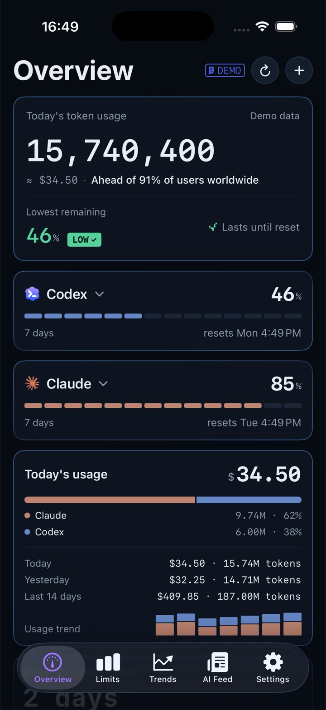
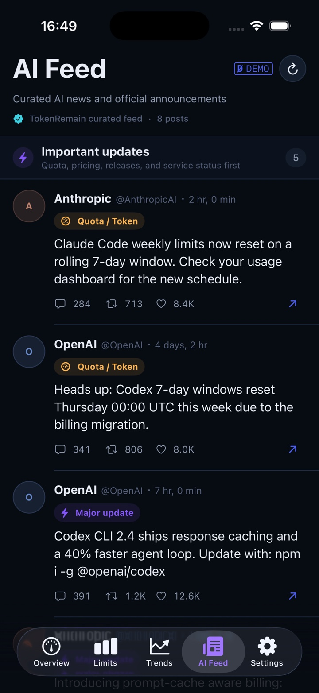
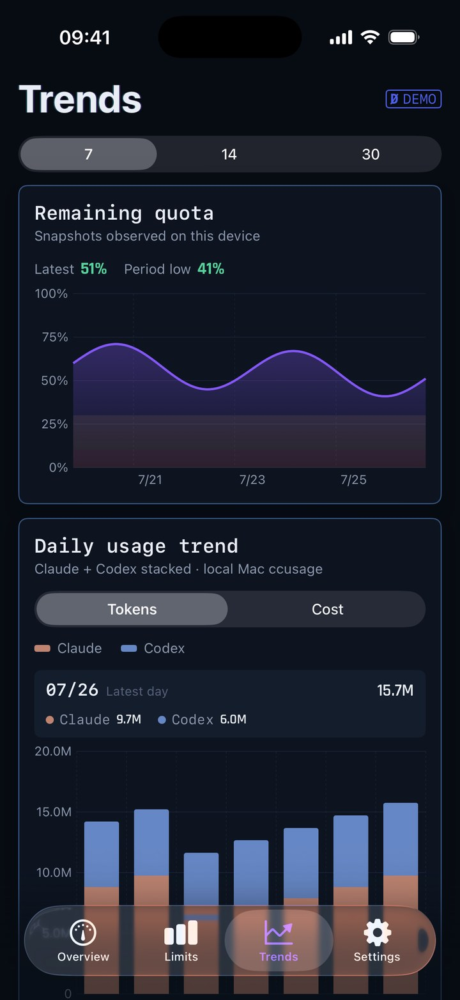
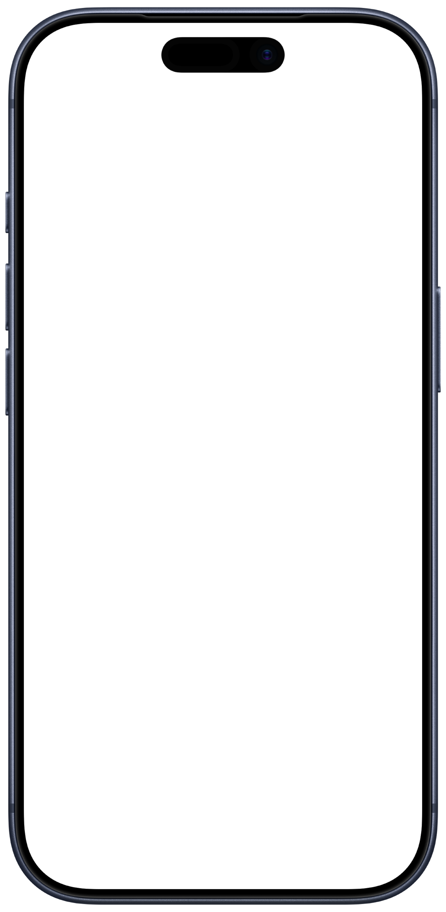
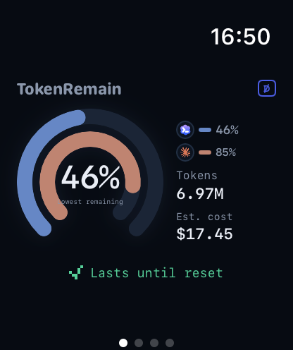
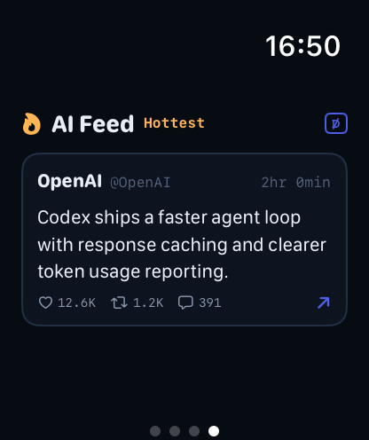
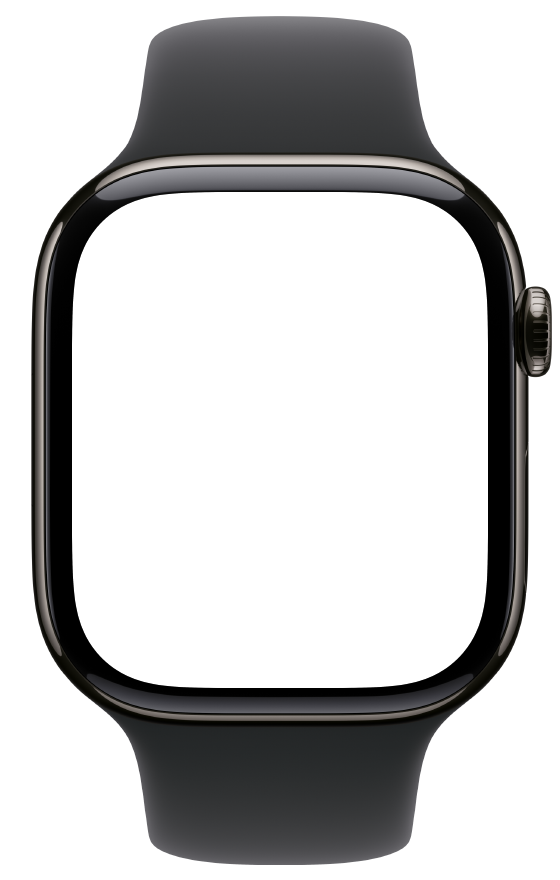
Apple WatchFrosted open-arc gauges on the wrist: lowest remaining in the centre, one provider arc each, today's tokens and cost beside — plus an AI Feed page and watch-face complications.
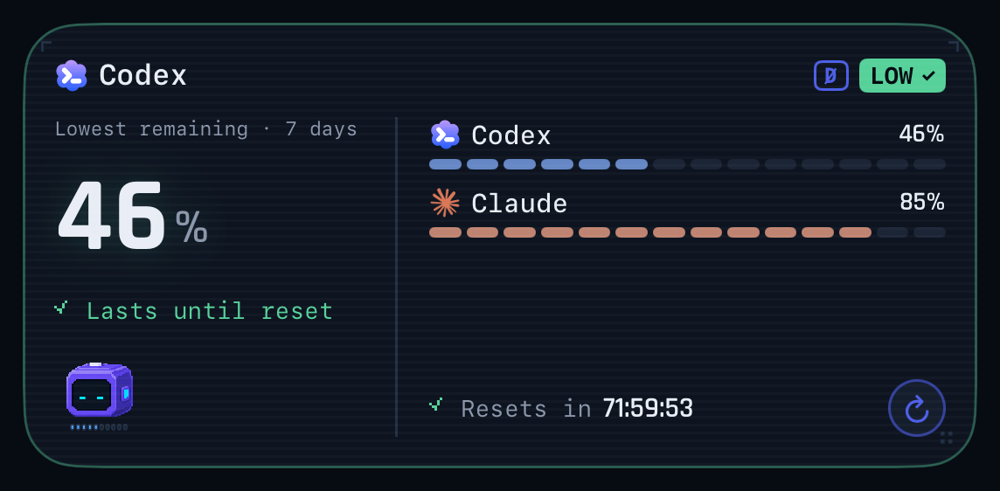
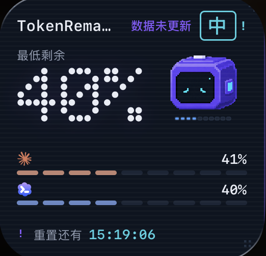
Supported Providers
Supported services
Most services connect automatically the moment you're signed in: TokenRemain only reads credentials that already live on your machine — no extra login, no token refreshing. Every card says where its data comes from.
Official windows stay under Claude; external routes such as DeepSeek keep the Claude card while naming the API that owns the balance.
Official windows stay under Codex; custom model providers keep the Codex card while naming the API that owns the quota.
Monthly billing-cycle quota and reset countdown. Read-only queries of state.vscdb.
 GrokAUTO
GrokAUTOWeekly pool remaining. Reads the Grok CLI's existing credentials.
Weekly allowance, read through your local Cursor sign-in — use the same Cursor account as Grok Bot.
Monthly credits. Reads your local GitHub sign-in.
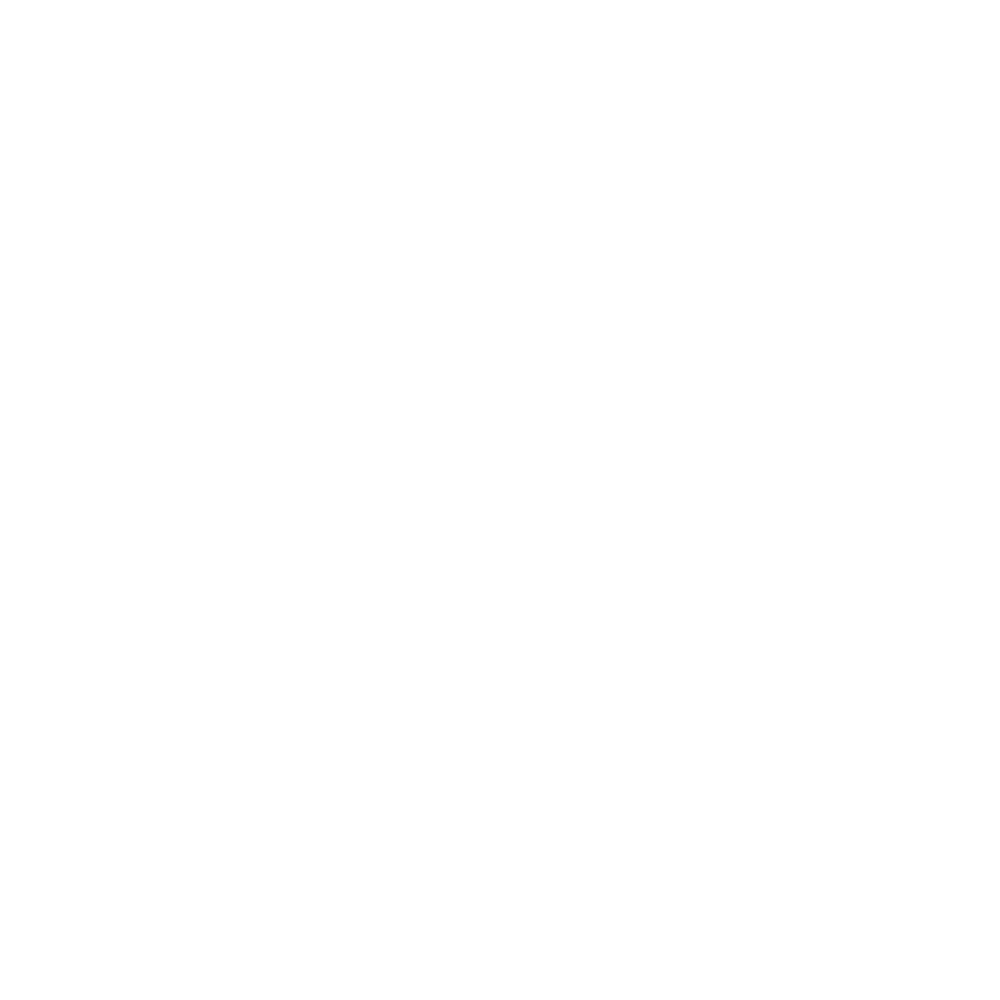
WindsurfAUTODaily / weekly quotas from Windsurf's read-only local login state.
Daily / weekly quotas from the SeatManagement API. Reads your local Devin credentials.
Quota pools, plus optional Claude / third-party pools. Reads the local sign-in state.
 OpenCodeAUTO
OpenCodeAUTOGo plan usage stays local; configured third-party providers keep the OpenCode card while naming the API quota source.
Amp Free, paid balance and credits — the same summary as amp usage. Uses the Amp CLI's key read-only, or a pasted Cookie.
Pay-as-you-go account balance. The key lives only in your Keychain.
 KimiAPI KEY
KimiAPI KEYCoding session / weekly windows, via API key or kimi-auth. Stored only in your Keychain.
Coding Plan session / weekly windows, on the Global or China endpoint you choose. The key lives only in your Keychain.
China-region Team Plan quota pools. The JSON config lives only in your Keychain.
Prepaid credit balance, official spend and per-key limits.
muse.ai's weekly token pool: percent used and reset time. The pasted Cookie lives only in your Keychain.
Rolling 5-hour and weekly request windows from dev.meta.ai, read per team.
Droid token allowance for the billing period, with the Standard and Premium pools both shown.
Credits for the billing cycle, with the plan name and cycle end.
New API-compatible account balance APIs or a custom balance endpoint. The config lives only in your Keychain.
 Alibaba Token Plan
Ollama
Alibaba Token Plan
Ollama
Credential locations and endpoints for every service are documented in the repo README; pace prediction uses real window progress and official reset times to judge whether your current pace lasts until reset. Trae Agent logs count toward local token and cost totals only; Trae has no quota card.
AI Feed
The AI news that moves your quota, pre-sorted
A curated feed of AI-industry posts, read straight inside the app — a full reading tab on iPhone with an on-device archive, a glance page on Apple Watch, a panel on the Mac Dashboard. Quota, rate-limit and reset changes get pinned to the top and pushed as notifications; ordinary industry chatter stays quiet below. No X account, no login, no keyword soup.
A fixed, curated roster — not an algorithm
Tier one follows official and first-party voices (@claudeai, @AnthropicAI, @OpenAI, @sama…) checked every 10 minutes. Tier two rotates a fixed 12-account whitelist ranked by real engagement. Original posts only — replies, reposts and quotes are rejected.
Two priorities that actually matter
TOKEN RESET — quota, rate-limit or reset changes; MAJOR UPDATE — big model, API or price moves. Both are pinned and trigger a notification. Everything else scrolls by quietly as NORMAL.
Reads like a public bulletin board
The app fetches the curated result as public data from the TokenRemain broadcast service. Your provider credentials, usage numbers and identity are never attached to the request — the feed doesn't know who you are.
Notifications on your terms
Major-update notifications are optional and delivered through macOS / iOS system notifications. Turn them off and the feed simply stays a reading list.
Claude usage limits now reset every five hours.
📌 PINNED · NOTIFIED
Introducing our next frontier model — rolling out to all paid plans this week.
📌 PINNED · NOTIFIED
Long-horizon agents are mostly a memory problem now, not a reasoning problem.
— Illustrative sample items —
Data Security & Privacy
Privacy isn't a promise. It's the architecture.
Every line below is a verifiable technical fact, not privacy-policy boilerplate — you can trace each one in the source.
Read-only credentials, never refreshed
Reads the access tokens your tools already maintain. Refresh tokens are never touched, nothing is written back — no fighting Claude Code or Cursor for their sessions.
Keys live in the Keychain
Manually added API keys (Z.ai, OpenRouter…) are stored only in the macOS Keychain — never in source, bundles or logs.
No credential relay
Quota queries go straight to each provider's official API. The public feed, push service, and aggregate download counter never receive provider credentials; optional Apple-device sync uses your private iCloud database.
No behavioral tracking
No telemetry, ads, cookies, or analytics SDK. The website keeps only one anonymous aggregate Mac download count.
No account required
You never sign up for TokenRemain — being signed in to your local tools is enough.
Cache and stats stay local
Mac caches and cost statistics stay local. Only when you enable sync does an allowlisted, encrypted display snapshot enter your private iCloud database.
- Provider credentials — read in place, never copied out.
- API keys — macOS Keychain only.
- Usage cache & cost stats — computed and kept locally.
- Allowlisted quota snapshot — percentages, countdowns, risk level.
- AES-256-GCM encrypted before it enters your private database.
- Off by default — one switch, and only between your own devices.
- One anonymous integer — the aggregate DMG download count.
- The public AI feed — served to every client identically.
- Never received — credentials, usage numbers, or identifiers.
Brand
A logo that works for a living
The robot isn't decoration — its face is a gauge. One mascot drives the popover, Dashboard, iPhone app and widgets; your lowest remaining quota picks one of its eleven expressions. Meet them all:
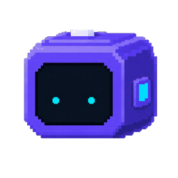
DRAG — OR PICK A SPRITE BELOW
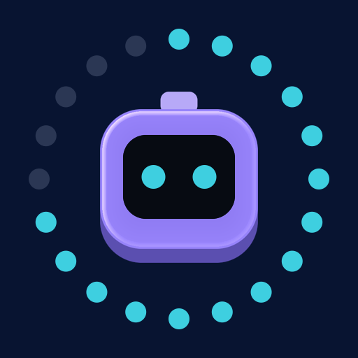
App icon macOS · iOS · watchOS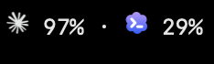
Menu bar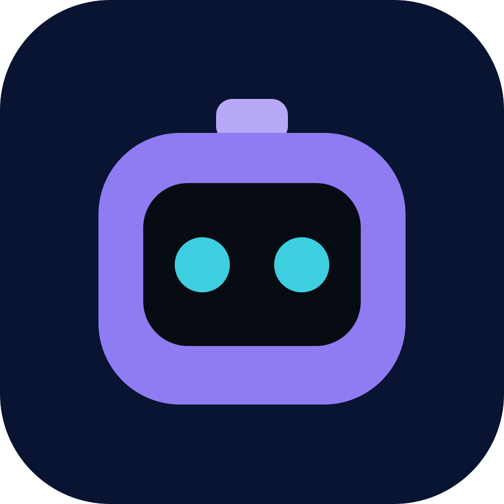
Mark · dark/light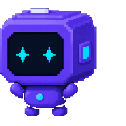
Mascot · motionAll marks shown at their production aspect ratios — nothing cropped, stretched or recolored. Provider glyphs (Claude starburst, Codex petals) follow each provider's official identity and never bleed into TokenRemain's own violet / cyan.
Current Release
Known limits of the Mac release
The notarized Mac release is available now. These limits are deliberate trade-offs — data safety always outranks feature coverage.
- CHIPUniversal Mac build — supports Apple Silicon (arm64) and Intel (x86_64).
- OSRequires macOS 14 Sonoma or later; macOS 26 gets native Liquid Glass, 14/15 fall back to the dark card style.
- DISTThe public DMG is Developer ID signed and Apple notarized. It is currently distributed outside the Mac App Store.
- DEPSDirect quota queries need the matching tools signed in on this Mac (Claude Code, Codex CLI, Cursor…); services that aren't signed in show setup hints. Key-based services such as Z.ai, OpenRouter and DeepSeek need an API key pasted once.
- ESTCost figures are API list-price estimates, not your subscription bill; when a credential expires, data pauses and the app tells you how to recover.
Features
Keep your pace in hand
Pace prediction
Real window progress plus official reset times decide whether you'll make it to reset — with an ETA when you won't.
Menu bar & floating window
Choose which apps show in the menu bar and on the Dock icon's two meters; refresh every 1/5/15/30 min or manually; a floating window stays on top across Spaces.
Today's cost estimate
ccusage counts today's tokens and estimated API cost by provider and model — input, output and cache apart, in your display currency — all computed locally.
AI feed
Quota resets, rate-limit changes and major model releases get pinned and trigger local macOS notifications. →
Release
Download and install
Download the notarized DMG
Use the official button above. The download is signed with Developer ID and notarized by Apple.
Move TokenRemain to Applications
Open the DMG and drag TokenRemain into the Applications shortcut.
Open and choose your providers
Launch TokenRemain from Applications and tick the local tools it found. Paste API keys where needed, then optionally enable Apple-device sync and AI Feed notifications.
All source, in the open
How credentials are read and where data goes — every line is auditable. Issues and PRs welcome.github.com/Carstin520/token-remain